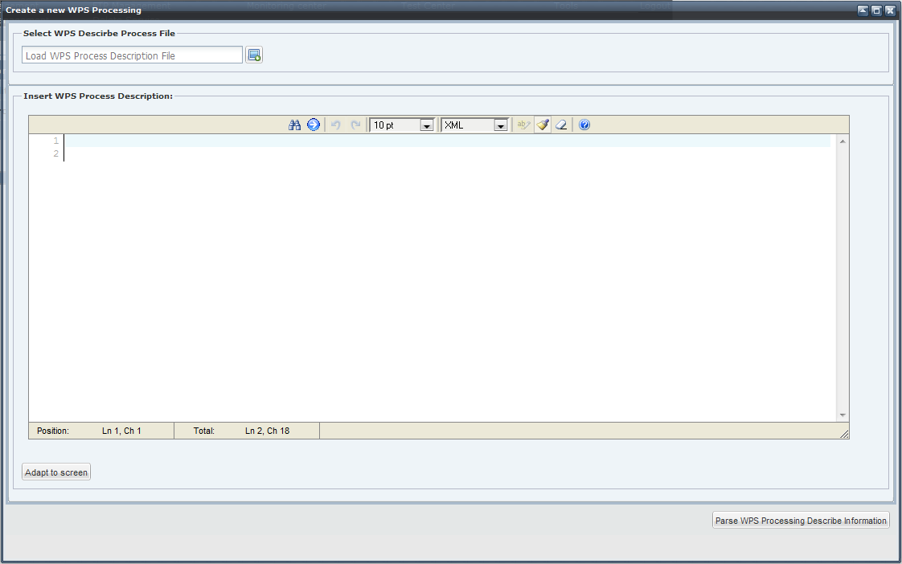

A new WPS Processing can be added to a service in order to grow its computing power.
Select a WPS service and click on the Operations management menu link. A page reporting the operations available for the selected service should be displayed.
To add new processing click on the "Add WPS processing" button The browser should display the following dialog:

In this step a Describe Process document has to be be provided. The DescribeProcess operation allows WPS clients to request a full description of one or more processes that can be executed by the service. This description includes the input and output parameters and formats and can be used to automatically build a user interface to capture the parameter values to be used to execute a process. In tho Toolbox the describe document is used to build the WPS infrastructure and set the variables that will be used in the processing. Read here for additional information on how to build a Describe Process document.
The document can be copied directly in the text area or can be loaded from a file.
When done, click on the "Parse WPS Processing Describe Information” button.
In order to complete the creation of the WPS processing see the "Add a WPS processing" section.